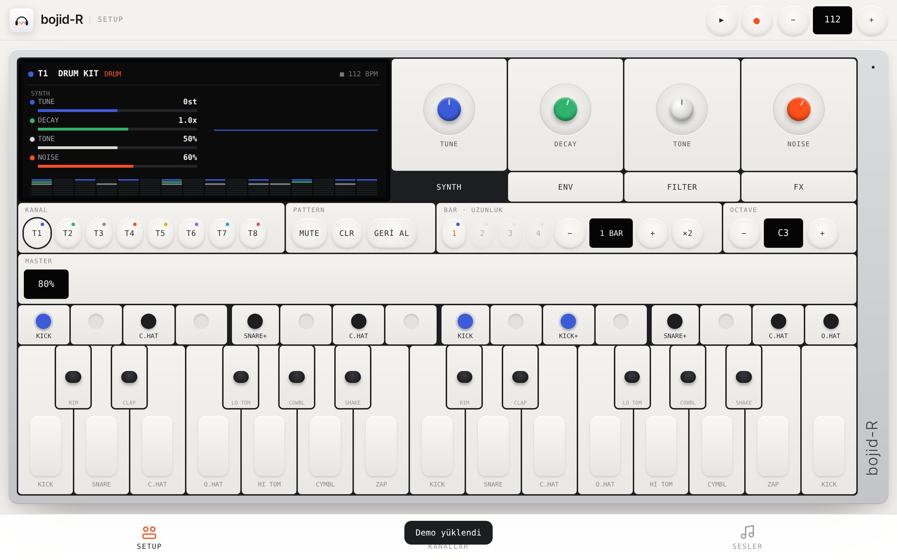
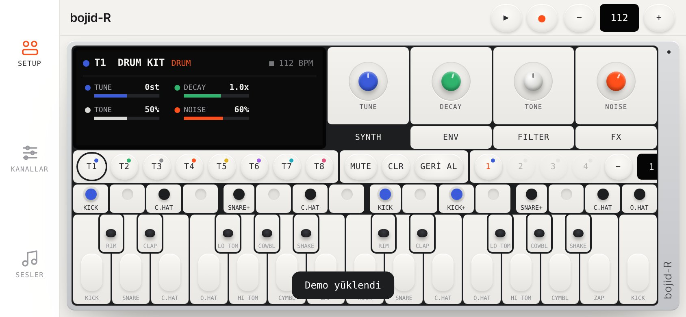
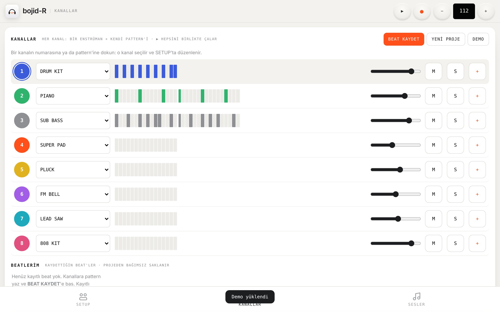

bojid-R; davul, bas, piyano ve synth seslerini 8 kanalda birleştirip beat yapmanı sağlayan bir groovebox. Telefonda, tablette ve tarayıcıda çalışır.


Aşağıdaki bojid-R gerçek uygulamanın kendisi. Ekrana dokun, sesi aç ve klavyeden çalmaya başla. Kaydettiğin sesler ve beat'ler tarayıcında saklanır.
Bir donanım synth'in sadeliğini, bir müzik uygulamasının esnekliğiyle birleştirir.
Her kanala ayrı bir enstrüman ve kendi pattern'ini ver: 1. kanalda davul, 2. kanalda piyano, 3. kanalda bas. ▶ hepsini birlikte çalar. Ses seviyesi, mute ve solo her kanalda.

Analog, FM, telli çalgı, davul ve sampler. Dalga, zarf, filtre ve efektleri 4 renkli knob'la şekillendir.
● tuşuna bas, 4 vuruşluk sayımı bekle ve çal. Notalar zamanlamaları ve uzunluklarıyla kanala yazılır. Beğenmezsen geri al.
Yaptığın beat'i enstrümanlarıyla kaydet, yeni bir projede istediğin kanala tek dokunuşla geri ekle.
WAV, MP3 ya da OGG dosyası yükle. Sampler klavyeye yayar; perde, başlangıç, ters çalma ve loop ayarlanır.
Pattern'ler kanal başına 4 bara kadar uzar; ×2 ile kopyala, barlar arasında gez. Tempo 40–240 BPM.
Dokunmatik ekran için tasarlandı: Setup, Kanallar ve Sesler sekmeleri. Telefonda yatay, tablette tam ekran çalışır.
Kanallar sekmesinde bir kanala dokun ve listeden enstrümanını seç: davul, piyano, bas…
Bir nota çal, sonra 16 step'ten istediklerine dokun. Ya da ● ile canlı kaydet.
Renkli knob'larla dalga, zarf, filtre ve delay/reverb'ü ayarla.
BEAT KAYDET ile beat'ini sakla; yeni projelerde istediğin kanala ekle.
Ücretsiz, reklamsız, hesap gerektirmez. Uygulama yatay ekranda tam ekran açılır.
Evet, web sürümüyle. Safari'de web sürümünü aç, Paylaş → Ana Ekrana Ekle ile uygulama gibi kullan.
Cihazında, uygulamanın kendi deposunda. Hesap ya da sunucu yok; telefon ile web sürümü kayıtları paylaşmaz.
Tarayıcılar ses için bir dokunuş bekler: “Burada başlat”a ya da ekrana bir kez dokun. Telefonun sessiz modda olmadığından emin ol.
APK, açık kaynak koddan GitHub Actions ile otomatik derlenir. Kaynak kodu ve her sürüm GitHub'da herkese açık.